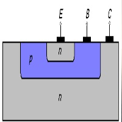
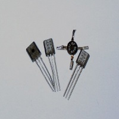
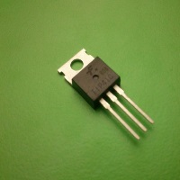

Матеріали
-

Режими роботи транзистора
В залежності від того, в яких станах знаходяться переходи транзистора, розрізняють режими його роботи. Оскільки в транзисторі є 2 переходи (емітерний та колекторний), і кожен із них може знаходитись в двох станах (відкритому та закритому), розрізняють чотири режими роботи транзистора. Основним є активний режим, при якому емітерний перехід знаходиться у відкритому стані, а колекторний — в закритому. Транзистори, які працюють в активному режимі, використовуються в схемах підсилення. Окрім активного виділяють інверсний режим, при якому емітерний перехід закритий, а колекторний — відкритий, режим насичення, при якому обидва переходи відкриті, та режим відсічки, при якому переходи закриті. Першою практичною математичною моделлю біполярного транзистора була Модель Еберса—Молла!
-

Активний режим
Активному режиму роботи транзистора відповідає відкритий стан емітерного переходу і закритий колекторний перехід. В цьому режимі переходи транзистора мають різну ширину: закритий колекторний перехід значно ширший ніж відкритий емітерний перехід. Окрім наскрізного потоку електронів, в структурі в активному режимі протікає інший потік, а саме, зустрічний потік дірок, що рухаються із бази в емітер. Два зустрічних потоки (дірок та електронів) відображають ефект рекомбінації в базі. Електронний потік створюється електронами, які рухаються із емітера, однак не доходять до колекторного переходу (як електрони, що створюють наскрізний потік), а рекомбінують із дірками в базі. Дірковий потік створюється дірками, що надходять із зовнішнього кола в базу для компенсації втрати дірок внаслідок рекомбінації з електронами. Вказані потоки створюють в зовнішніх колах емітера і бази додаткові складові струмів. На рисунку також показані потоки неосновних носіїв заряду, що створюють власний тепловий струм колекторного переходу (потік електронів, що рухаються із бази в колектор, та потік дірок з колектора в базу).
-

Інверсний режим
Інверсний режим (інверсний активний режим) роботи біполярного транзистора аналогічний активному режиму з відмінністю лише в тому, що в цьому режимі у відкритому стані знаходиться колекторний перехід, а в закритому — емітерний.
-

Режим насичення
В режимі насичення обидва переходи транзистора знаходяться у відкритому стані. В цьому режимі електрони і з емітера, і з колектора рухаються в базу, внаслідок чого в структурі протікають два зустрічних наскрізних потоки електронів (нормальний та інверсний). Від співвідношення цих потоків залежить напрям струмів, що протікають в колах емітера та колектора. Внаслідок подвійного насичення бази, в ній накопичуються надлишкові електрони, внаслідок чого посилюється їх рекомбінація з дірками і рекомбінований струм бази є набагато вищим, ніж в активному чи інверсному режимах. У зв'язку із насиченням бази транзистора і його переходів надлишковими носіями зарядів, опір останніх стає дуже маленьким. Тому електричні кола, що містять транзистор в режимі насичення можна вважати короткозамкненими.
-
Режим відсічки
В режимі відсічки обидва переходи транзистора знаходяться у закритому стані. Наскрізні потоки електронів в цьому режимі відсутні. Через переходи транзистора протікають потоки неосновних носіїв заряду, що створюють малі некеровані теплові струми переходів. База і переходи транзистора в режимі відсічки збіднені рухомими носіями заряду, внаслідок чого їх опір є дуже високим. Тому вважають, що транзистор в режимі відсічки розриває електричне коло. Режим насичення та відсічки використовуються при роботі транзистора в імпульсних схемах.